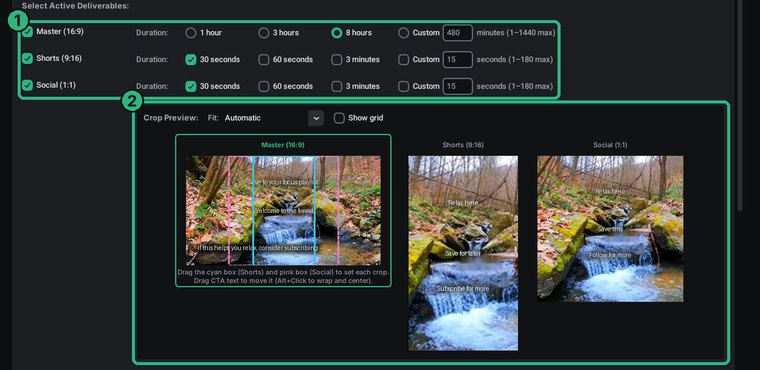
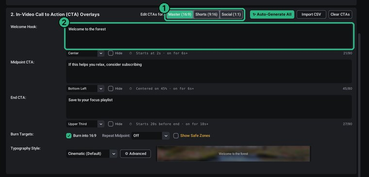
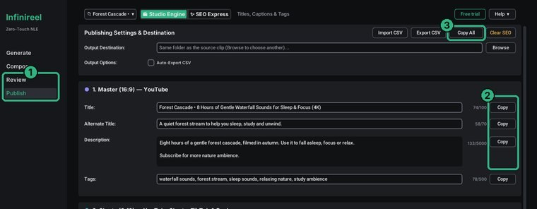

The ambient video maker for YouTube, Shorts and ReelsOne clip in.
Every platform out.
Turn one short nature clip into a seamless 8-hour YouTube video, plus Shorts, TikToks, Reels and square posts, with your on-screen calls to action and ready-to-paste titles. All on your own Windows PC, for a one-time price.
Windows 10 and 11 · No subscription · Free trial at launch, no card
Highlights
Infinireel at a glance
- Up to 24 hoursSeamless 4K YouTube Masters, with 1, 3 and 8 hours one click away
- 8 h of 4K in about 11 min*Plus eight short clips, in our test on the processor alone
- Shorts, Reels, square9:16 and 1:1 clips from 15 s to 3 minutes, framed by dragging a box
- Vertical clips onlyOr skip the long video and just reframe wide footage into 9:16 and 1:1
- On-screen calls to actionWelcome, subscribe and closing lines, kept readable and clear of app buttons
- AI titles for 6 platformsYouTube, Shorts, TikTok, Instagram, Facebook and Pinterest, within each one's limits
- Offline on your PCNo uploads, no cloud fees, no queue. Windows 10 and 11
- Pay once, 2 PCs$79 one-time ($49 for the first 100 buyers), 12 months of updates
Sound familiar?
Making ambient videos shouldn't take all week
Relaxing nature videos look simple. Making them for every platform, every week, is not.
Long videos take forever
Looping a 30-second clip into an 8-hour video in a normal editor means a huge timeline, a long export, and often a visible jump every time the loop restarts.
Every platform wants its own version
YouTube wants 16:9. Shorts, TikTok and Reels want 9:16. Feeds want square. That's re-cropping and re-exporting the same footage again and again.
The tools and subscriptions pile up
A loop tool, a clip tool, an SEO tool, maybe a cloud editor that charges by the minute. The monthly bills start before your channel earns anything.
Writing the text is a second job
Titles, descriptions, tags and captions for six platforms, each with its own length limits. Plus remembering to ask viewers to subscribe.
Infinireel replaces that whole routine with one click, on your own PC, for one price.
Who it's for
Made for faceless and ambient channels
If you post calm, looping footage, or want to start, Infinireel is built around your workflow.
Ambient and relaxation channels
Rain, waterfalls, fireplaces, forests, ocean waves: long videos for sleep, study, focus and meditation.
New faceless channels
Starting out? Post a long video and a set of Shorts from day one, without learning a video editor or paying monthly.
AI-video creators
Turn short AI-generated scenes into long seamless loops and platform-ready cutdowns, or make the seed clip right in the app.
Multi-platform posters
On YouTube, TikTok, Instagram, Facebook and Pinterest? Get every format, and the text for each, from one render.
How it works
Three steps. One click to render.
No editing timeline, no exporting six times. Infinireel does the whole job in one pass.
Drop in your clip
Any short nature clip you own or have permission to use: a waterfall, rain, a fireplace. No clip yet? Make one with AI on the Generate page.
Choose what to make
A Master from 1 minute to 24 hours, Shorts and square posts up to 3 minutes. Drag a box to frame each one, and type your welcome, subscribe and closing lines.
Click Start Production
Infinireel renders everything on your PC and writes the titles, descriptions and tags. You get one folder per platform, ready to upload.
Real render, real numbers
8 hours of 4K in about 11 minutes*
One 55-second clip in. A seamless 8-hour 4K YouTube Master and eight short clips out, all with their calls to action, in a single run, on the processor alone, without a graphics card.
* About render times: rendering speed is hardware dependent. These figures come from our own test render on October 30, 2026, on a Windows PC using its processor (no graphics card). They are not a guarantee: they come from one test on one PC, and your times will vary with your computer (processor, graphics card, memory, disk speed and free space), the source clip (resolution, length, frame rate, content), the lengths and number of outputs you choose, and anything else running at the same time.
What you get from one clip
Everything your channel needs, in one pass
One render gives you the long video, the short clips and the words to post them with.
A seamless YouTube Master
4K, from 1 minute to 24 hours, with no visible seam where the loop restarts. 1, 3 and 8 hours are one click away.
Shorts and square posts
9:16 and 1:1 clips of 15 s, 30 s, 60 s or up to 3 minutes. Drag a box over your clip to frame each one.
Calls to action on screen
A welcome line, a subscribe reminder halfway (or every 15–60 minutes on long videos) and a closing line, in your own style. Kept clear of each platform's buttons and captions, with a soft backdrop added automatically when the background is bright, so the text stays readable.
Titles, descriptions and tags
Written by AI from a frame of your clip for YouTube, Shorts, TikTok, Instagram, Facebook and Pinterest, each within that platform's limits.
A Delivery folder
One folder per platform with the video and the text to paste. Upload in minutes.
No clip? Make one
The Generate page turns a text prompt or a photo into a short seed clip with AI.
Rendering happens on your own PC, using your graphics card when it can. No uploads, no cloud fees, no waiting in a queue.
Only need vertical clips?
Turn wide videos into Shorts, Reels and square posts
You don't have to make a long video at all. Untick the Master and use Infinireel just to reframe wide or odd-sized footage (landscape, ultra-wide, drone or 4:3) into 9:16 and 1:1 clips. Use footage you own or have permission to use.
- Drag a box to choose what stays in frame for each format
- Lengths of 15 s, 30 s, 60 s or up to 3 minutes
- Your on-screen text, kept clear of each app's buttons
- Captions written for YouTube Shorts, TikTok, Instagram, Facebook and Pinterest
Before and after
The usual way vs. Infinireel
Same footage, same goal: a long YouTube video and short clips for every platform.
| Job | The usual way | With Infinireel |
|---|---|---|
| 8-hour video | Loop it in an editor, wait for a long export, check for the seam | Pick 8 hours. A seamless 4K loop, rendered on your PC (about 11 minutes in our test, with all the short clips*) |
| Shorts, Reels, square posts | Re-crop and export each one separately | Drag a box per format; all render in the same pass |
| Subscribe reminders | Add text by hand to every video | Welcome, subscribe and closing lines on every format, kept clear of each app's buttons |
| Titles, descriptions, tags | Write them for each platform and count characters | AI writes them for six platforms, sized to each one's limits |
| Ready to upload | Hunt for files and copy text around | A Delivery folder per platform: the video and the text to paste |
| Cost | Several tools, often monthly | $79 once ($49 for the first 100 buyers) |
How it compares
One app instead of three kinds of tools
Loop tools stop at the long video. Clip and SEO tools live in the cloud and charge monthly. Infinireel does the whole job, offline.
| Feature | Infinireel | Loop-only tools | Cloud clip & SEO tools |
|---|---|---|---|
| Seamless loops of 8+ hours | Yes, up to 24 hours | Yes | Rarely; long files cost more |
| Shorts, Reels and square crops | Yes | Usually not | Yes |
| On-screen calls to action | Yes, per format, clear of app buttons | Basic overlays at most | Some |
| AI titles, descriptions and tags | Yes, for 6 platforms | No | Often a separate tool |
| Renders on your own PC | Yes | Yes | No, upload required |
| Price | One-time | Cheap one-offs or 30-day passes | Monthly subscriptions or credits |
Swipe the table sideways to see every column. Based on our review of popular tools in October 2026. Features vary from tool to tool.
A look inside
See every format before you render
Pictures from the app's Quick Start guide.
Frame every format at once
Pick your lengths, then drag the Shorts and square boxes over the clip. The preview shows each crop with its on-screen text.

Your words, on screen
Type a welcome line, a subscribe reminder and a closing line for each format, or let Auto-Generate All write them.

Copy, paste, publish
Titles, descriptions and tags for every platform, ready to copy one by one or all at once.

Video ideas
What will you make?
Any short clip with gentle motion makes a great loop. A few ideas for your channel:
- Rain on a window
- Forest waterfall
- Crackling fireplace
- Ocean waves
- Falling snow
- Mountain stream
- Thunderstorm at night
- Campfire under the stars
- Northern lights
- Cozy cabin
- Aquarium
- Sleep videos
- Study and focus backgrounds
- Meditation and yoga backgrounds
Price
Pay once. Keep it.
Try every feature free. Buy when you're ready to publish. Prices in US dollars.
Free trial
No time limit, no card
- Every feature
- A small moving "Made with Infinireel · Free trial" mark on videos
- Masters up to 10 minutes
- Any number of computers
License
Then $79. No subscription.
- Every feature, no mark on videos
- Masters up to 24 hours
- 2 computers (for example a desktop and a laptop)
- 12 months of updates included; renew for $29/year if you like. The app keeps working either way.
Payment and sales tax will be handled by Polar, our reseller. AI features use your own key from Google, OpenAI or Anthropic: you pay them directly, a few cents for a video's titles and descriptions, about $1 to generate a seed clip with AI.
FAQ
Questions
When can I get it?
Infinireel is almost ready. Subscribe on YouTube or email us and we'll tell you the day the free trial and the $49 launch price open.
Is there a free trial?
Yes, with no time limit and no card. Every feature works; videos carry a small moving "Made with Infinireel · Free trial" mark and Masters stop at 10 minutes. Buy a license to remove both.
Do I need video editing experience?
No. You pick your lengths, type your on-screen lines and click Start Production. A Quick Start guide (in the Help menu) and "Next step" tips walk you through your first video.
What is a seamless loop?
A video that repeats a short clip so smoothly you can't see where it restarts. Infinireel builds one from your clip, so an 8-hour video looks like one continuous scene.
Can I make TikToks and Instagram Reels too?
Yes. The 9:16 clips work for YouTube Shorts, TikTok and Instagram Reels, and the square clips for feeds. Infinireel writes the captions for each platform.
How long does an 8-hour video take to render?
In our test, an 8-hour 4K Master plus eight short clips took about 11 minutes, on the processor alone without a graphics card. That is one test, not a guarantee: times vary with your computer, your clip and the lengths and outputs you choose.
Can I use it just to turn wide videos into Shorts and Reels?
Yes. Untick the Master and Infinireel makes only the 9:16 and 1:1 clips. It works with landscape, ultra-wide and other odd-sized footage: drag a box to choose what stays in frame.
Does it only work with nature clips?
It works with any short clip, but it's made for nature and ambient footage, where gentle motion makes the loop invisible.
Do I need an AI subscription?
No. AI is optional: you can type your own titles and calls to action. To let Infinireel write them, paste a key from Google (free to get at aistudio.google.com), OpenAI or Anthropic. You pay that provider directly, usually a few cents per video. The key stays on your PC.
Does it upload my videos anywhere?
No. Rendering happens on your PC. The only things that leave it are the license check, the one-time FFmpeg download, and, only when you use an AI button, a single frame of your clip or your prompt, sent to the AI provider you chose.
What do I need to run it?
Windows 10 or 11 (64-bit); there's no Mac version yet. You'll also need enough free disk space for your videos (an 8-hour 4K Master took about 100 GB in our test; Infinireel tells you the size before it starts). A graphics card from NVIDIA or AMD makes rendering faster, but isn't required. No administrator rights needed to install.
What is FFmpeg, and why does it download?
FFmpeg is the free, widely used video tool that does the encoding. It's a separate program with its own license, so instead of bundling it, Infinireel downloads the official release once on first start (about 258 MB), or uses a copy you already have.
Can I use it on my laptop and my desktop?
Yes. A license works on two computers. To move it to a new one, deactivate it on the old one (Help > License).
What happens after the 12 months of updates?
Nothing stops working. You keep the version you have, forever. Renew for $29 a year if you want the newer versions.
Can I monetize the videos?
Yes. Videos made with a license are yours to publish and monetize, as long as you own, or have permission to use, the footage and any music or sound in them. Infinireel doesn't supply or license footage. Clips you make with AI on the Generate page follow your AI provider's terms. Each platform also decides monetization under its own rules, so check them before you rely on earnings.
Follow along on YouTube
See what Infinireel makes, and be first to know when it launches.
youtube.com/@infinireel